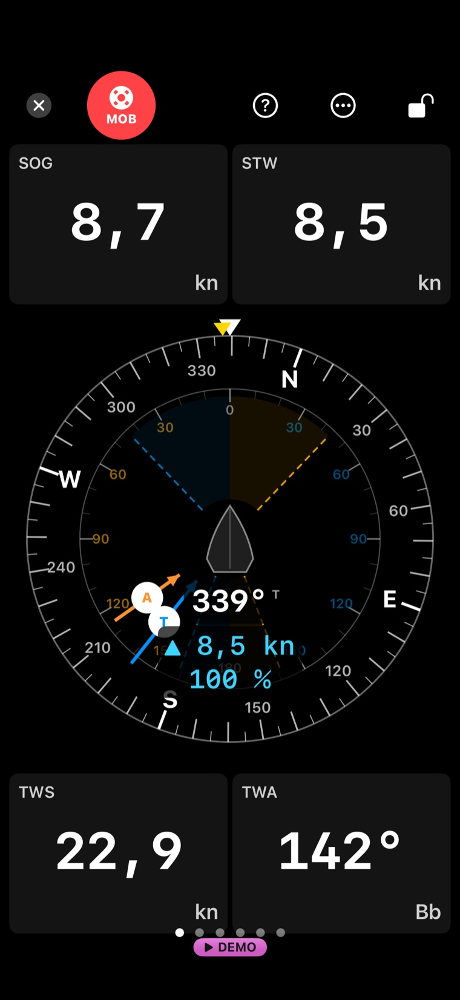

Logbuch, Regatta und Trimm
Das Logbuch, das mitsegelt.
Etmar zeichnet deinen Törn auf, zählt den Start herunter, merkt sich deinen Trimm und zeigt nach dem Rennen, wo die Zeit geblieben ist. Gebaut für eine Hand, nasse Finger und zwei Sekunden Blickzeit. Offline an Bord, mit oder ohne Bordnetz.
Ablegen mit einem Tipp, der Track läuft im Hintergrund, das Anlegen erkennt die App selbst.
Countdown mit Ton und Ansage, Startlinie pingen, nächste Marke mit Peilung und Distanz.
Fakten zu jedem Rennen sind frei. Pro sagt, was eine Wende gekostet hat und wo der Mehrweg lag.
Was Etmar kann
Zehn Bereiche. Ein Tipp führt zur vollständigen Liste mit Stufe und Datenquelle je Funktion.
- AutomatikAblegen, Aufzeichnen und Anlegen von selbst.
- Bordnetz (NMEA)NMEA 2000 und 0183 über das Boots-WLAN.
- Logbuch und TörnEinträge, Etappen, Berichte, Export.
- Karte, Wind und NavigationOffline-Karten, Wind jetzt, Go-To, Häfen.
- RegattaCountdown, Startlinie, Bahn, Fakten.
- Auswertung danachWas es gekostet hat, und warum.
- TrainingMessläufe, Wendenserie, Übungsbahn.
- Boot, Trimm und WerkstattTrimm-Tagebuch, Segel, Polare, Werkstatt.
- Hilfsmittel für den NotfallMOB, SOS-Tafel, AIS-Warnung.
- System und DatenDemo-Modus, Daten, Nachtmodus.
Mit Bordnetz mehr, ohne Bordnetz vollständig
Ein NMEA-Gateway im Boots-WLAN genügt, und Etmar zeigt Wind, Fahrt durchs Wasser und Tiefe, schreibt den Wind an jeden Trackpunkt und legt sogar von selbst ab. Ohne Bordnetz bleibt nichts leer: Kurs und Fahrt kommen aus dem GPS, der Luftdruck vom iPhone, der Wind von der nächsten Station oder aus dem Modell.

Free und Pro
Free
Alles für den Tag auf dem Wasser: Logbuch und Aufzeichnung, Karte und Navigation, Vorstart und Bahn, Instrumente vom iPhone und vom Bordnetz, Trimm-Tagebuch, Werkstatt, Export und Berichte. Free zeichnet alles auf, was Boot und Bordnetz liefern.
Pro
Die Auswertung danach: Manöverkosten, Mehrweg, Startbilanz, Formkurve, Saisonvergleich, gefahrene Polare. Dazu eigene Instrumentenseiten, der Segelkompass und die geplante Übungsbahn. 24,99 € im Jahr mit 14 Tagen Test oder 4,99 € im Monat (Preise in Deutschland).
Der Demo-Modus in der App simuliert ein Bordnetz und schaltet Pro frei. So lässt sich alles ausprobieren, bevor du etwas kaufst oder anschließt.
Inhaltsverzeichnis
Alle Seiten und ihre Abschnitte. Jeder Eintrag springt an die Stelle.
Handbuch
- Aufbau: vier Tabs
- Die Karte als Arbeitsfläche
- Free und Pro — und die Demo-Stufe
- Logbuch & Törn
- Etappenplan
- Karte, Seezeichen & Offline
- Navigieren: Go-To & Routen
- Regatta: Vorstart & Rennen
- Regatta-Bahn Schritt für Schritt: Mittwochsregatta NSV
- Regatta-Auswertung
- Training mit Messläufen
- Trimm-Tagebuch
- Boot, Segel & Polare
- Instrumente & NMEA
- Hafenhandbuch
- Notfall: MOB und SOS
- Werkstatt
- Segelkalender
- Einstellungen & Datensicherung
- Auswertungen im Einzelnen
- Abkürzungen